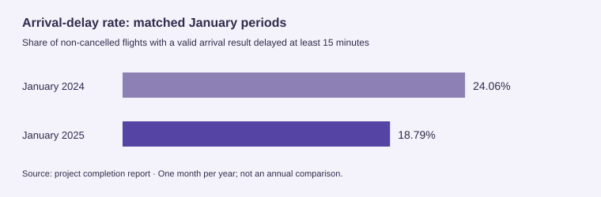

US flight delay analysis
1,087,018 flight records · Two matched months
An interest in airplanes and geography became a first exploration of what makes a data pipeline dependable.
The problem
Explore flight delays, routes and airport connectivity.
My contribution
My first data-engineering project, working through the pipeline behind the dashboard.
Result
A reported 1,087,018 records across two matched monthly periods.
What I learned
Reliable analysis depends on source tracking, safe reruns and clear metric definitions.

Why I chose this project
I enjoy airplanes and geography, so flight data gave me a subject I wanted to explore while taking on a challenging new course. This was my first data-engineering project, and the most useful part was learning about the work behind the dashboard: how data is preserved, checked, transformed and served.
From source records to exploration
The pipeline combines Bureau of Transportation Statistics flight records with OpenFlights airport metadata. HDFS preserves the original files, PySpark validates and enriches the records, Parquet stores the analytical layers, and MongoDB serves prepared summaries to a Plotly Dash interface.
What makes the pipeline robust
- Traceable inputs. SHA-256 source identifiers link outputs to the exact flight and airport files used.
- Visible data quality. Invalid records retain rejection reasons; airport enrichment preserves flight rows even when an endpoint cannot be matched.
- Safe reruns. Source identity and completion records are checked before output is reused. Deterministic MongoDB identifiers support repeatable loading.
- Explicit measures. Cancellation rates use scheduled flights; arrival-delay rates use non-cancelled flights with valid arrival results. Missing delays are not silently converted to zero.
- Separated serving. The dashboard queries prepared MongoDB summaries rather than running Spark jobs for each interaction.
Reported project evidence
The completion report records 1,087,018 flight records across January 2024 and January 2025, nine Gold subject tables per period, and matching MongoDB and HDFS summary counts. It also records 115 passing automated tests and successful rerun checks; these are the report’s recorded checks, not a fresh execution of the pipeline here.
A geographically grounded comparison
The dashboard explores carrier reliability, airports, routes, cancellations and connectivity using enriched airport coordinates. The reported January-to-January comparison shows arrival-delay rates of 24.06% in 2024 and 18.79% in 2025. This describes the loaded months, not full-year performance.
What I took from it
I came away with a better understanding of the engineering needed to make a pipeline reliable: checking assumptions, preserving lineage, defining metrics carefully and making reruns predictable. Those decisions became as interesting to me as the final charts.
Scope
HDFS runs in pseudo-distributed mode on one computer and Spark runs locally. The project exercises the data-engineering workflow without claiming multi-machine performance or fault tolerance.
Why separate cancellations from delays?
A cancelled flight has no normal arrival result. The pipeline therefore uses scheduled flights for cancellation rates and valid non-cancelled arrivals for delay rates, rather than treating a missing delay as zero.